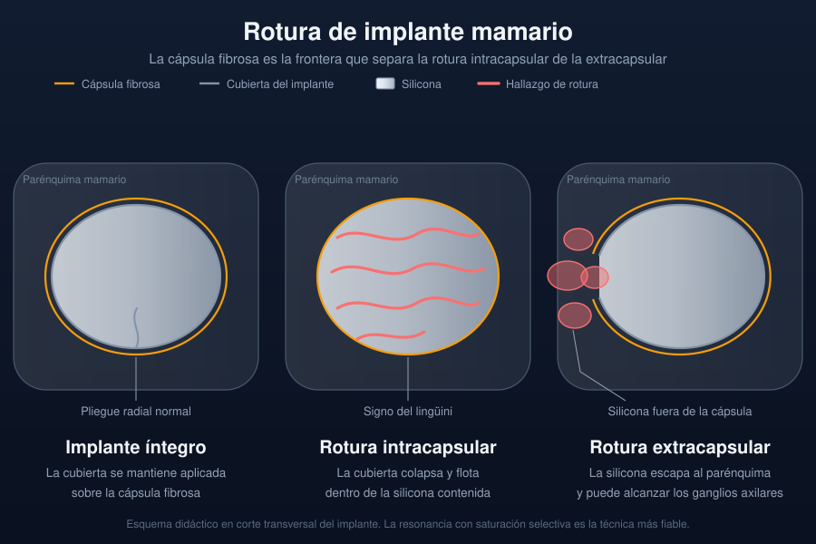

Ficha del catálogo
Rotura de implante mamario
- Sistema
- Mama
- Modalidad
- RM
- Región
- Mama con implante
- Dificultad
- Avanzado
Los implantes mamarios de silicona pueden perder su integridad con el tiempo. Se distingue la rotura intracapsular, en la que la silicona queda contenida por la cápsula fibrosa que el organismo forma alrededor de la prótesis, de la rotura extracapsular, en la que el material escapa al tejido mamario. La mayoría de las roturas intracapsulares son silentes y se detectan en estudios de imagen.
Técnica
La resonancia sin contraste con secuencias específicas para silicona es la técnica más fiable, ya que permite separar la señal de la silicona, del agua y de la grasa mediante saturación selectiva. El ultrasonido es útil como primera aproximación y detecta bien la rotura extracapsular. La mamografía muestra la silicona extracapsular pero no valora el interior del implante.
Qué observar
- Pliegues radiales normales de la cubierta del implante
- Líneas curvilíneas dentro del implante que indican colapso de la cubierta
- Silicona situada entre la cubierta colapsada y la cápsula fibrosa
- Silicona fuera de la cápsula, en el parénquima o en la axila
- Colecciones periprotésicas y su contenido
- Adenopatías axilares con contenido de silicona
Hallazgos
En la rotura intracapsular la cubierta colapsada flota dentro de la silicona y produce múltiples líneas curvilíneas, imagen conocida como signo del lingüini. Un signo más precoz es la presencia de silicona por fuera de la cubierta pero dentro de la cápsula, que se reconoce en los pliegues. En la rotura extracapsular se identifica silicona libre en el parénquima, que en el ultrasonido produce el patrón de tormenta de nieve y en la mamografía aparece como densidades de bordes irregulares fuera del implante.
Perlas
El signo del lingüini es específico pero tardío, ya que traduce un colapso completo de la cubierta. Buscar de forma dirigida pequeñas cantidades de silicona en el interior de los pliegues permite detectar roturas más precoces, y para ello son imprescindibles las secuencias con saturación selectiva.
Diagnóstico diferencial
- Pliegues radiales normales
- Son invaginaciones de la cubierta que mantienen contacto con la periferia del implante y no flotan en la silicona.
- Seroma periprotésico
- Es una colección de señal de agua entre el implante y la cápsula, sin colapso de la cubierta.
- Silicona inyectada de forma libre
- Corresponde a material introducido fuera de un implante, con nódulos dispersos y antecedente conocido.
- Contractura capsular
- El implante adopta forma esférica con cápsula engrosada, pero la cubierta permanece íntegra.
Simuladores
- Pliegue radial profundo que remeda una línea de colapso
- Artefacto de desplazamiento químico en la interfase entre silicona y grasa
- Implante de doble luz cuya interfase interna simula una rotura
Por modalidad
- RM
- Es la técnica más fiable para la rotura intracapsular gracias a las secuencias con saturación selectiva de silicona.
- US
- Detecta bien la silicona extracapsular por el patrón de tormenta de nieve y sirve como primera aproximación.
Protocolo
Resonancia mamaria sin contraste con antena específica, secuencias potenciadas en T2 con saturación de agua para resaltar la silicona y secuencias con saturación de silicona para valorar el parénquima, en al menos dos planos. No se requiere contraste para valorar la integridad del implante. El estudio debe indicar el tipo de implante, su localización respecto al músculo y el tipo de rotura.
Clasificación
Se distinguen la rotura intracapsular, con silicona confinada por la cápsula fibrosa, y la extracapsular, con silicona en el parénquima o en los ganglios. Como situación intermedia se describe la presencia de silicona dentro de los pliegues de la cubierta, considerada signo precoz de pérdida de integridad. El informe debe precisar cuál de estas situaciones existe y el estado del implante contralateral.
Errores frecuentes
- Confundir pliegues radiales normales con signos de colapso de la cubierta
- Administrar contraste de forma innecesaria en un estudio de integridad del implante
- No revisar la axila en busca de silicona en los ganglios

implante mamario rotura intracapsular signo del lingüini silicona tormenta de nieve resonancia mamaria cápsula fibrosa